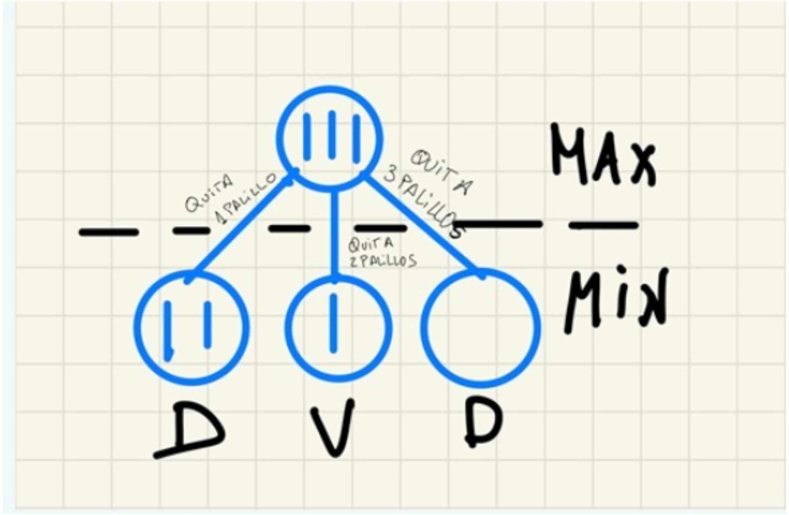

¿Cuál de los siguientes métodos de búsqueda es un caso particular de búsqueda primero el mejor?:
¿El uso de una función heurística garantiza que un método de búsqueda consiga la solución óptima?:
En el algoritmo A* ABIERTOS representa:
En el algoritmo A* cuando un sucesor corresponde con un nodo que ya estaba en CERRADOS:
En el algoritmo A* el enlace al mejor padre determina una estructura de:
Las heurísticas son:
Un juego es determinístico porque:
Hay una diferencia destacable entre un estado de un juego y un estado de un problema de búsqueda heurística y es que:
Un juego puede considerarse como un caso de sistema multiagente _:
En un juego inicialmente hay 3 palillos sobre la mesa, y dos jugadores MAX y MIN. MAX comienza el juego, y podrá quitar 1, 2 o 3 palillos. Le sigue Min, que también podrá quitar 1, 2 ó 3 palillos. Estas acciones se repiten hasta que se quite un jugador quite un último palillo, en cuyo caso pierde el juego. ¿La figura muestra el árbol de este juego?:

Las técnicas de juegos se llaman de búsqueda con adversario porque:
Un estado terminal en un juego bipersonal es un estado en el que:
Un juego bipersonal con información perfecta se considera un laboratorio de interés para la IA porque:
Al inicio de la exploración de un árbol de juego:
El tamaño aproximado del espacio de nodos a explorar en el ajedrez, que tiene un factor de ramificación promedio de 35 y una profundidad media de 50 movimientos por cada jugador es de:
En un juego una estrategia contingente:
La solución de un juego permite indicar a cada jugador:
Las valoraciones de los nodos terminales de un juego se realizan considerando el punto de vista de _:
En los juegos bipersonales con información perfecta:
Un juego de suma nula:
Es necesario valorar situaciones o asociar una utilidad a situaciones distintas a las terminales para poder resolver un juego:
Un juego con información perfecta es un caso de sistema multiagente con dos jugadores en el toda la información del tablero está disponible para cada jugador:
El caso promedio la poda alfa beta permite profundizar:
En el algoritmo Minimax podemos cambiar el jugador MAX por el jugador MIN sin más que:
En teoría de juegos, Minimax es:
En un juego con componente aleatoria, si realizamos un cambio de escala en los valores mediante una función real creciente (escala lineal, escala logarítmicas, etc..), ¿la variante del Minimax para este tipo de juegos elegirá la misma jugada?:
La cota alfa se calcula como el:
La efectividad de la poda alfa-beta del algoritmo Minimax depende del orden en que se exploren las jugadas:
En el contexto de búsqueda en juegos con una profundidad de corte o limitada, una posición estable es:
Una función de valoración de nodos intermedios de un juego:
Una regla general como "Todas las casillas azules de un mapa pueden transitarse si el agente tiene bikini":
La información que se almacena en un nodo de un espacio de estados es un ejemplo de:
El cálculo proposicional es decidible, lo cual significa que:
La relación “X es el padre de Y”:
Un árbol de demostración:
El modus ponens:
Si partimos de dos cláusulas, una en la que se afirma que "no llueve o hace frío" y otra que en la que "hace frío", la regla de resolución aplicada a ambas establece que:
La instanciación universal nos permite deducir:
Para representar con predicados la información sobre una Asignatura, el Curso en que se imparte y el cuatrimestre:
¿Es eficiente la resolución en lógica de predicados?:
¿Cuál de los siguientes es un tipo de aprendizaje?:
En un sistema basado en el conocimiento, el motor de inferencia:
¿Cuáles son los dos métodos de aprendizaje supervisado?:
¿Cuál o cuáles de las siguientes afirmaciones acerca de los algoritmos de búsqueda no informada son ciertas?:
¿Cuáles de las siguientes opciones son correctas?
¿Cuáles de los siguientes métodos son búsqueda sin información?:
¿Cuántos caminos se mantendrán en memoria en la búsqueda en profundidad retroactiva?:
¿Qué estrategia de control utiliza un método de escalada?:
¿Qué representan los nodos cuando se usa la estructura de grafo dirigido para representar un problema de Inteligencia Artificial? ¿Y los arcos?:
¿Sería viable generar el grafo completo para representar el espacio de estados del ajedrez?:
¿De entre la búsqueda en anchura y en profundidad retroactiva, ¿cuál de los dos usa menos memoria?:
¿En la búsqueda en anchura es necesario ir analizando desde el estado inicial todos los sucesos para pasar al nivel siguiente en el árbol de búsqueda?:
¿En la búsqueda en profundidad retroactiva, el contenido de la memoria almacenada es?:
¿La búsqueda en profundidad retroactiva es una estrategia de búsqueda:
La principal diferencia entre el algoritmo de escalada simple y el algoritmo de escalada por la máxima pendiente es:
¿Los métodos heurísticos en general no garantizan la solución óptima, pero producen resultados que satisfacen la resolución del problema?:
¿Los problemas fundamentales de un método de escalada son?:
¿Qué tipo de aprendizaje aprende una función a partir de ejemplos de sus entradas y salidas?:
Selecciona la definición que mejor se ajusta al concepto de espacio de estados:
Una ventaja de los métodos de escalada es que son siempre fáciles de implementar:
¿Cuál de entre los siguientes algoritmos de escalada tiene más probabilidad de caer en un óptimo local?:
¿Cuál de entre los siguientes algoritmos de escalada reduce la posibilidad de caer en óptimos locales?:
Cuando la salida de un árbol de decisión es una variable continua, el problema se denomina:
¿Qué hace diferente a los algoritmos genéticos de los otros métodos de escalada?:
¿Qué representa en el problema la adecuación con el entorno en un algoritmo genético?:
Cuando se resuelve un problema con un algoritmo genético tanto la codificación del problema como los operadores:
¿De los siguientes algoritmos ¿cuál tiene más posibilidades de caer en un máximo o mínimo local?:
¿El algoritmo de enfriamiento simulado es una variante de los métodos de escalada que se cambia en algunos casos?:
El algoritmo de escalada estocástico selecciona el siguiente estado...
¿En el algoritmo de enfriamiento simulado la energía representa?:
En el algoritmo de enfriamento simulado la temperatura representa:
Los métodos de escalada tienen como objetivo pasar irrevocablemente desde un nodo al nodo siguiente:
En el algoritmo de búsqueda A*, \(g(n)\) expresa el coste estimado desde el nodo \(n\) hasta el nodo del mejor camino hasta el momento desde el nodo inicial al \(n\):
Para un nodo, el algoritmo A* la función \(h\) es un valor que no cambia a lo largo del algoritmo:
Si realizamos un cambio de escala en los valores de la función de evaluación estática, por ejemplo, multiplicar el valor por 10, ¿el algoritmo Minimax elige la misma jugada?:
Un problema para el que existe una resolución algorítmica ¿podría ser un problema de Inteligencia Artificial?:
¿En qué consiste actuar racionalmente?:
El aprendizaje basado en instancias:
La búsqueda primero el mejor o por el mejor nodo hace uso de una estrategia de control:
¿Cuál de los siguientes algoritmos tienen una componente aleatoria?:
¿Es esencial el uso de memoria en un agente reactivo?:
Todo juego bipersonal con información perfecta y suma nula tiene solución:
En el contexto del aprendizaje automático, ¿Qué es una instancia?:
Con qué método de búsqueda se obtienen siempre la solución con un número menor de pasos?:
El test de Turing tiene que ver con:
Cuando se dice que un agente es capaz de razonar sobre un modelo del mundo para decidir qué hacer para lograr un objetivo, estamos hablando de un agente:
El subsistema de explicación de un sistema experto basado en reglas tiene como misión:
En el algoritmo A* usando \(f = g+h\), la función \(g\) es un valor asociado a cada estado que no cambia a lo largo del tiempo:
En el algoritmo de poda alfa-beta, un nodo MIN se puede podar cuando:
Cuando tengamos más de una hipótesis que satisfaga todos los ejemplos debemos elegir:
Señalar de entre los siguientes cuál es un modelo de representación del conocimiento:
En un grafo Y/O si tenemos un nodo O, debemos:
El enfriamiento simulado consiste en:
En el algoritmo A* usando la fórmula \(f = g+h\) en cada nodo, ¿qué es la función \(g\)?:
En un juego la incertidumbre producida por la tirada de un dado se mide:
¿Cuál de las siguientes herramientas no debería emplearse para construir un agente reactivo?:
En el algoritmo de poda alfa-beta, beta es:
La búsqueda en anchura permite obtener la solución con menor número de acciones:
En el problema del mono y los plátanos, donde el mono tiene que determinar una serie de acciones para coger un plátano colgado del techo conociendo los objetos presentes en la habitación, ¿qué tipo de agente sería más apropiado?:
La arquitectura de subsunción:
Un algoritmo de aprendizaje es bueno si:
Se dice que un problema de aprendizaje es realizable si el espacio de hipotesis:
Una hipótesis es consistente si:
En el algoritmo A* CERRADOS representa:
En el algoritmo Minimax el valor Minimax V(J) de un nodo J de la frontera de búsqueda es ___ al de su función de evaluación estática:
La complejidad de un juego se mide:
Las bases de conocimiento:
En el contexto de los problemas de búsqueda ¿qué es el factor de ramificación?:
¿Cuál de estos problemas no es de interés para la inteligencia artificial?:
Los sistemas expertos son un ejemplo de:
La denominada edad oscura de la I.A., fue debida a que:
La Inteligencia Artificial surge a partir (seleccionar solo una opción):
¿Cuál de las siguientes respuestas representa mejor los pasos que lleva a cabo un agente reactivo?:
¿ Cuál de las siguientes no es una característica propia de los agentes?:
¿Cómo podría beneficiar el uso de una arquitectura de subsunción en un robot aspirador?:
¿Qué es un agente inteligente o racional?:
¿Cuál de los siguientes problemas no debería modelizarse como un agente reactivo?:
¿Cuál o cuáles de los siguientes juegos son bipersonales con información perfecta? (marcar todos los que sean):
En el algoritmo Minimax se parte de la hipótesis de que los dos jugadores juegan de manera perfecta. ¿Qué ocurre si uno de ellos falla y no actúa según lo previsto? Seleccione una:
La cota beta es:
En un juego con componente aleatoria los valores de los estados se propagan hacia arriba en las capas aleatorias usando:
Entre las múltiples formas de inferir un árbol de decisión la más usada y eficaz consiste en:
En aprendizaje una hipótesis estará bien generalizada si:
¿Qué dice el principio conocido como Navaja de Ockham (cuando dos teorías explican los hechos observados)?:
El aprendizaje inductivo se basa en:
Un aprendizaje que se basa en aprender a partir de patrones de entradas sin especificar sus salidas es un aprendizaje:
Según su funcionamiento, ¿qué estructura de datos sería más apropiada para implementar la búsqueda en profundidad sobre grafos?:
La Inteligencia Articial se basa en:
¿Cuál o cuáles son los componentes esenciales que necesita un Sistema Basado en el Conocimiento?
Desde el punto de vista de la ingeniería cúal de estas afirmaciones representa mejor lo que pretende la Inteligencia Artificial
¿Qué tipo de agente conlleva una mayor complejidad?
Un agente ___ actúa en cualquier situación mediante un proceso estímulo/respuesta ante el estado actual del entorno en el cual está situado
¿Un agente que sea proactivo debe ser capaz de exhibir comportamientos dirigidos a lograr los objetivos que se plantee?
En la ___, los agentes llegan a un acuerdo que sea aceptable por todas las partes implicadas en la interacción.
Un agente inteligente es aquel que ___ ante una situación dada.
Las leyes del pensamiento se asocian con los:
Los sistemas multiagente son interesantes para representar problemas que tienen:
Aplicaciones de la IA. ¿Cúal de las siguientes es un campo de aplicación de la IA?
La llamada época oscura de la IA ocurrió durante
¿Cuál de estas áreas de desarrollo se ha mencionado en clase específicamente como importantes para el desarrollo de la IA?
La Evolución Histórica de la IA:
En realidad los hombres no son inteligentes, hacen solamente lo que le dicen sus genes
Puede llegar a poseer un receptor de TDT técnicas de la Inteligencia Artificial
¿Son los robots que participan en la robocup agentes reactivos, deliberativos o híbridos?
¿En qué tipo de interacción los agentes organizan una actividad para evitar las interacciones perjudiciales y explotar las beneficiosas?
¿Qué arquitectura de Agentes contiene un modelo simbólico del mundo explícitamente representado, y cuyas decisiones se realizan a través de un razonamiento lógico basado en emparejamientos de patrones y manipulaciones simbólicas?
Un robot diseñado para jugar al futbol
¿Cuáles de estas características pertenecen a un agente deliberativo?
¿Cuál de estas propiedades de agentes implica un funcionamiento más simple?
Para una partida de ajedrez, por ejemplo, ¿cuál es el agente mas idóneo para realizarla?
En un entorno cooperativo, ¿los agentes pueden comunicarse o no entre ellos?
¿Qué es un sistema multiagente?
El Test de Turing tiene como finalidad:
¿Mediante qué forma o formas de interacción, interactúan fundamentalmente los agentes en la RoboCup?
¿Un programa de Inteligencia Artificial debe resolver un problema de la misma forma que lo haría un ser humano?
Los agentes interactúan con los ambientes a través de sensores y efectores
En un Sistema Multiagente, la principal ventaja es la centralización de los datos.
Un agente es un sistema hardware capaz de percibir un entorno y actuar en él, se caracteriza por ser autónomo, reactivo, proactivo y racional
¿Cual de las siguientes características NO es imprescindible en un agente?
Un agente es autónomo cuando se apoya más en el conocimiento inicial que le proporciona un humano que en sus propias percepciones
¿Cuándo y dónde se considera que se inició la Inteligencia Artificial como disciplina o campo de actividad?
Gracias a las increíbles capacidades de cálculo que tienen los ordenadores de hoy en día podemos decir que son capaces de demostrar inteligencia
Marque todas las respuestas correctas: En un SMA....
El agente reactivo percibe su entorno a través de...
Un espacio de estados es la representación del ___ que se va generando a través de las acciones del agente.
¿Qúe es más complejo en el diseño de un agente reactivo?
¿En que fase de un agente reactivo percibe el entorno del mundo a través de sus sensores?
¿Cuál o cuáles de las siguientes características son de un agente deliberativo?:
¿Cuál o cuáles de los siguientes elementos son los más adecuados para representar la situación en la que nos encontramos jugando al "tres en raya"?:
¿Cuál de las siguientes opciones sería esencial implementarla en módulos de conocimiento (MC) basado en pizarras?:
¿Cuál es el mejor método para buscar secuencias de acciones que nos lleven al objetivo final en problemas de gran complejidad?:
Un robot programado para jugar a las damas, normalmente hace uso de un:
¿Cuáles son las fases de proceso en un agente reactivo?:
En un sistema de navegación GPS, ¿se podría realizar un Backtracking para encontrar una posible ruta hacia el destino?:
Un agente reactivo:
En un agente reactivo basado en un modelo icónico, la memoria:
¿Cuál es el principal problema a tener en cuenta al realizar el diseño de un agente deliberativo?:
¿Cuál de las siguientes características no pertenece al diseño de un agente reactivo?:
Grafo Y/O. ¿En qué tipo de nodos para resolver la tarea del nodo padre, es necesario resolver primero todas las tareas de los nodos hijos?:
A aquellos grafos que, por su reducido tamaño, representan la totalidad del problema y puede buscarse un camino sobre el mismo que nos lleve desde el estado original hasta el estado objetivo, se les denomina::
En la fase de búsqueda de la solución, ¿Puede ocurrir que aunque se use un grafo implícito, se desborde la memoria?:
La búsqueda retroactiva o backtracking pertenece a:
Agentes Reactivos. Un agente reactivo con memoria con representaciones icónicas, siempre encuentra su destino:
¿Qué es un MC?:
En Inteligencia Artificial los Árboles de Decisión son una técnica encuadrada dentro del Aprendizaje Automático. ¿Sabría decir a qué se dedica este campo?:
Agente Deliberativo. Los agentes deliberativos como norma general consumen menos memoria que los agentes reactivos:
Para el funcionamiento de un GPS, este debe disponer:
El algoritmo ID3:
No siempre es necesario usar una función heurística para evaluar los estados de un árbol de juego:
El algoritmo Minimax.
¿Cuál es el tipo de valores que pueden tomar las entradas y salidas de un árbol de decisión?:
La notación MIN MAX para cuantos jugadores se puede usar?:
Un árbol de decisión...:
Los seres humanos podemos construir agentes inteligentes, ya que conocemos y sabemos qué es la inteligencia:
La Habitación China. A principios de los 80, John Searle propone el ejemplo de La Habitación China como crítica al Test de Turing:
La heurística dada para el mapa de carreteras (distancia en línea recta desde la ciudad actual a la de destino) permite obtener la solución óptima al problema si utilizamos el algoritmo A*:
El algoritmo alfa-beta calcula el mismo movimiento que el algoritmo Minimax pero con mayor eficiencia:
El procedimiento Minimax y el procedimiento de poda alfa beta obtienen exactamente el mismo valor Minimax para todos los nodos del árbol:
Las reglas obtenidas a partir de un árbol de decisión no son excluyentes:
¿El aprendizaje por corrección de error, aprendizaje por refuerzo y el aprendizaje estocástico, son aprendizajes de tipo no supervisado?:
¿Cuál de las siguientes es la palabra clave o el concepto que mejor definiría globalmente la IA en la actualidad?:
¿Cuál o cuáles de las siguiente características son propias de problemas de IA?:
¿Qué fue llamado originalmente "el juego de la imitación" por su creador?:
Los robots autónomos de exploración de Marte no son reactivos porque:
Definición de IA. ¿Qué es la IA?:
¿En qué modelo de interacción entre agentes se trabaja conjuntamente?:
¿Cuál de estas características no corresponde a un sistema multi-agente?:
Un aspecto a tener en cuenta en el diseño de uno horno es que éste debe de estar en un cierto equilibrio. De los problemas en IA de los trabajos de la vida diaria, ¿cuál crees que aborda este tema?:
De los siguientes ejemplos cuál sería un producto propio del desarrollo de la IA:
¿Qué respuesta se adecua mejor a la relación que tiene cualquier persona con la IA?:
En un problema concreto, ¿qué es más apropiado utilizar, agentes reactivos, deliberativos o híbridos?:
Actualmente, ¿cuáles de estos son campos de aplicación de la IA?:
¿Cuál de los siguientes tipos de agente utilizan un modelo simbólico explícito del mundo?
¿Cuál de las siguientes opciones sobre las características de un SMA no es correcta?
¿Cuál fue la principal razón de la entrada en la edad oscura de la IA?
La característica capacidad estímulo-respuesta de un agente se define como:
En realidad los computadores no son inteligentes, hacen solamente lo que le dicen los programadores:
Las características indispensables que tiene que tener cualquier sistema (de cualquier tipo) para ser considerado como un agente son:
Una arquitectura reactiva es aquella que...
¿Qué tipo de agente utilizarías para implementar un robot dedicado a la limpieza del fondo de una piscina?
Los agentes reactivos:
Hay tres tipos de agentes: agentes sociales, agentes reactivos y ...
Las interacciones entre agentes ¿En qué tipo de agentes se dan?
Un agente _____ tiene la iniciativa y es capaz de aprovechar oportunidades.
¿En qué basa sus decisiones un agente?
Los agentes deliberativos, en comparación con los agentes reactivos, son complejos y tardan más en reaccionar ya que tienen un modelo del mundo.
De las siguientes opciones, señale las que sean ciertas para un agente:
Un hipotético sistema de transporte de trenes en el cual puede haber tanto locomotoras automatizadas como locomotoras controladas por humanos es...
Los principales problemas de los agentes reactivos son:
Un modelo cognitivo se asocia con:
¿Es posible un agente sin sensores?
¿Un agente que sea pro-activo debe ser capaz de exhibir comportamientos dirigidos a lograr los objetivos que se plantee?
El periodo de gestación de la IA fue _____.
La cota alfa es:
¿Qué tipo de agente sería un sistema GPS de planificación de ruta?:
¿Tendría sentido la utilización de un agente para la resolución de un laberinto?:
Empleando técnicas de Inteligencia Artificial podemos construir:
¿Un agente que juega al ajedrez es de tipo...?:
De las siguientes afirmaciones, ¿cuál no está relacionada en general con los Agentes Reactivos?:
“El intercambio de información mediante símbolos puede producir fallos lógicos” es una objeción al Test de Turing del tipo:
¿Cuál o cuáles de estas capacidades son necesarias para pasar el Test de Turing?:
Según el test de Alang Turing, una máquina es inteligente cuando:
En un sistema multiagente (SMA), ¿tiene sentido que todos los agentes tengan información completa de todo su entorno?:
¿Cuál de las siguientes características de los agentes, no es indispensable?:
Un agente es un sistema que ____:
¿Qué enfoque de Inteligencia Artificial es el que se usa en agentes reactivos?:
Análisis de enfoques. ¿Qué enfoque de la IA podemos realmente abordar? Es decir, ¿qué clase de sistemas son los que realmente podemos diseñar hoy en día con los conocimientos actuales del campo de la IA?
Características de un sistema multiagente. ¿Cuál de las siguientes afirmaciones no hace referencia a una característica de un sistema multiagente?:
Un agente proactivo al percibir un entorno:
Actualmente, ¿cuál es el mayor campo de aplicación de la IA?:
¿La Inteligencia Artificial puede ser de utilidad para la realización de páginas web?:
Características de un Sistema Multi-Agente:
Además de cooperación y negociación, ¿cuál es la interacción entre agentes que falta?:
Un árbol del juego es
¿Por qué es importante considerar la ética en el desarrollo y la implementación de la inteligencia artificial?
¿Funcionaría correctamente un algoritmo minimax para un juego del tres en raya que utilizara la siguiente función heurística \(f(T)=\)(número de filas, columna o diagonales aún libres para el jugador MAX) para un cierto tablero \(T\)?
¿Qué frase describe mejor el algoritmo de escalada estocástico?
( ) Es una versión del algoritmo de escalada simple en el que el orden de los vecinos a explorar se elige de forma aleatoria.
¿Qué se consigue con el aprendizaje automático?
¿Cuál de estas características es propia de un agente deliberativo?
¿En qué influye el factor de ramificación en un proceso de búsqueda?
Los agentes deliberativos se diferencian de los agentes reactivos en que los primeros disponen de:
Un conjunto de reglas de inferencia es sólido si
En el proceso de construcción de un árbol de decisión, ¿qué técnica se utiliza para reducir la complejidad del modelo y evitar el sobreajuste?
Cuando un juego no es de información perfecta
¿Cuál de las siguientes características es la que mejor representa a los problemas que incluimos dentro de la Inteligencia Artificial?